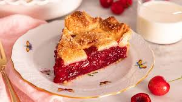

Rhubar Pie

Description:
This rhubarb pie is sweet and tangy with a fruity filling that holds together nicely. Plus, it's easy to make with just five ingredients.
Ingredients:
- 1 ⅓ cups white sugar
- 6 tablespoons all-purpose flour
- 1 (14.1 ounce) package double-crust pie pastry, thawed
- 4 cups freshly chopped rhubarb
- 1 tablespoon butter
Steps:
- Gather all ingredients, and preheat the oven to 450 degrees F (230 degrees C). Place an oven rack in the lowest position.
- Line the bottom and sides of a 9-inch pie plate with one pie crust. Combine sugar and flour in a small bowl; sprinkle 1/4 of the sugar mixture over the prepared bottom crust.
- Heap chopped rhubarb on top and sprinkle with remaining sugar mixture. Dot with butter and cover with top crust.
- Bake pie in the preheated oven for 15 minutes. Reduce temperature to 350 degrees F (175 degrees C) and continue baking until filling is bubbly and crust is golden brown, about 40 to 45 minutes.
- Serve the pie warm or cold. Enjoy!
Home